“中国红”是什么？
红色大概寓意着两种意思，一种是喜庆乐观激情，一种是血腥消极警惕。
而外国人一提到中国就是大红色，大红旗，大红墙，大红中国结，甚至好莱坞有个专门的名字叫“中国红”，那“中国红”是什么意思？怎么产生的呢？
百度百科曰：“红色是中华民族最喜爱的颜色，甚至成为中国人的文化图腾和精神皈依，代表着喜庆、热闹与祥和。中国人近代以来的历史就是一部红色的历史，承载了国人太多红色的记忆。 中国红氤氲着古色古香的秦汉气息；延续着盛世气派的唐宋遗风；沿袭着灿烂辉煌的魏晋脉络；流转着独领风骚的元明清神韵。以其丰富的文化内涵，盘成一个错综复杂的中国结，高度概括着龙的传人生生不息的历史。”
古代一般采用邹衍的五德来定位国朝颜色。五德终始说是统治者的一个工具，基本上代表统治阶级对前朝的态度，意义在于宣扬本朝当政的合法性。 五德中，金德服色尚白，水德服色尚黑，火德服色尚赤，木德服色尚青，土德服色尚黄。每一个新的朝代都会定位自己所属的德。初始的五德是虞土、夏木、殷金、周火，这是邹衍定的， 后面的就是统治者根据自己的需要，是推翻前朝还是中兴来定位自己的德。例如汉朝，一开始不承认秦朝，认为自己是周朝的继任，所以定位自己和秦朝一样，都是水德尚黑色，汉武帝时候又承认了秦朝水德，改自己为土德。 到了唐朝出现了红色的官服，五品以上三品以下穿的就是绯袍，州刺史也有穿绯袍的。另一个大一统王朝明朝是火德，尚赤，明朝的旗帜也基本都是红色的。
以下为中国历史上汉族人对于红色的运用:
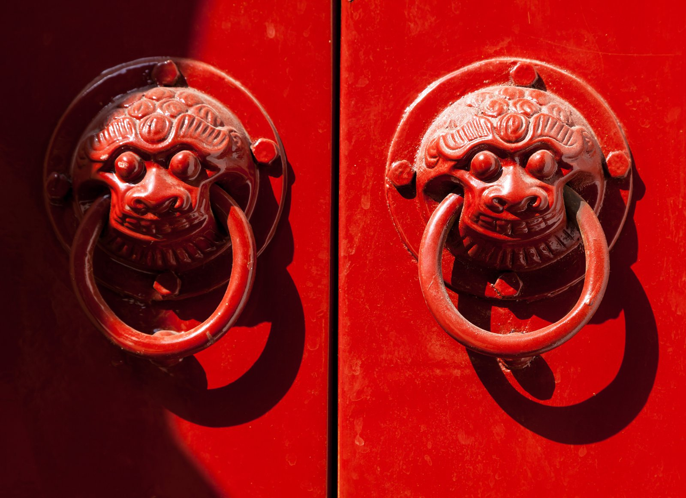
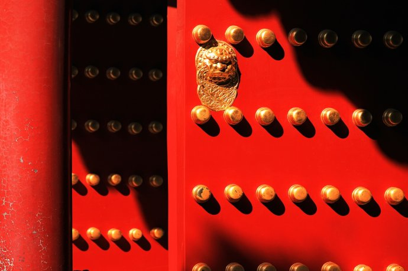
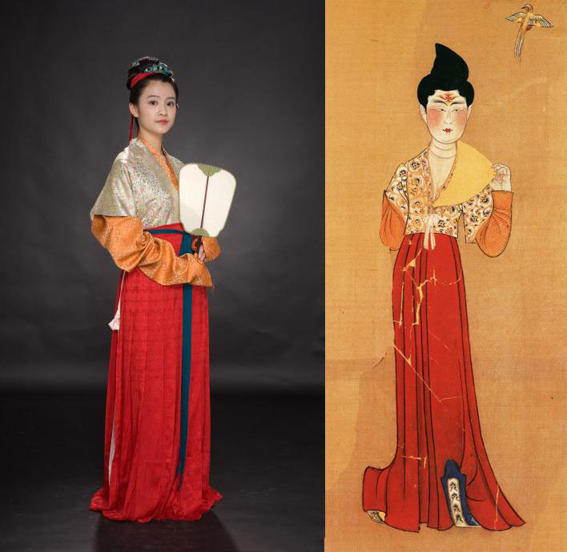
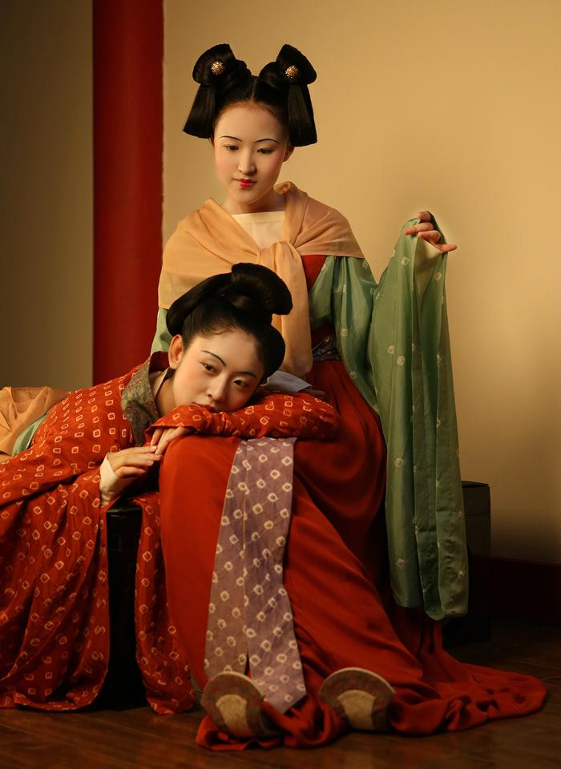
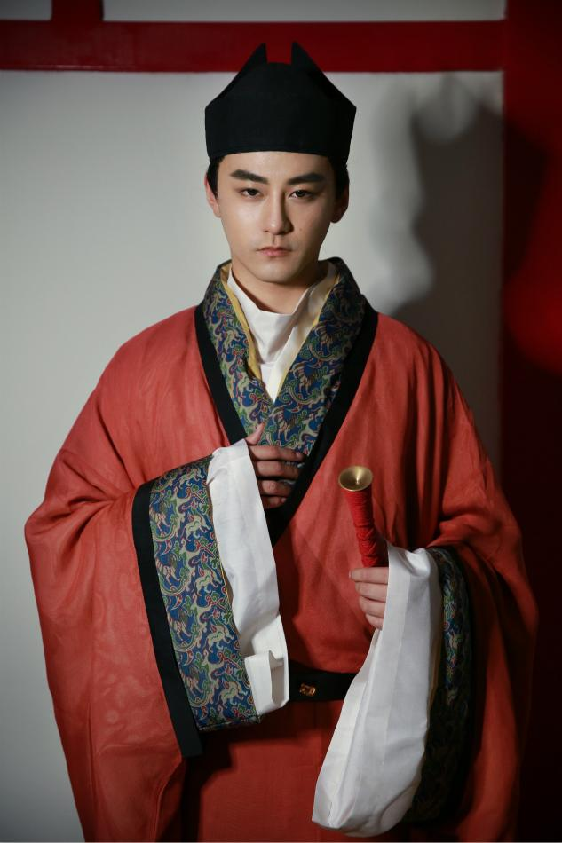
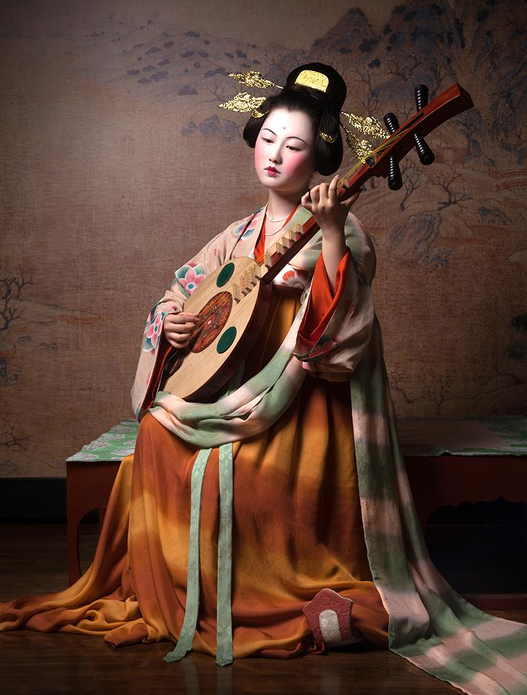
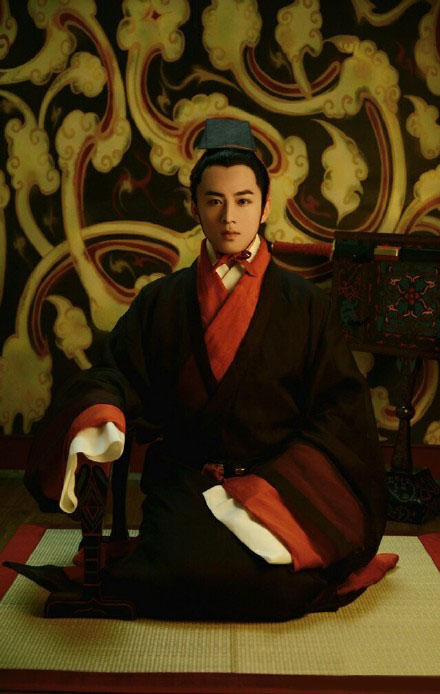
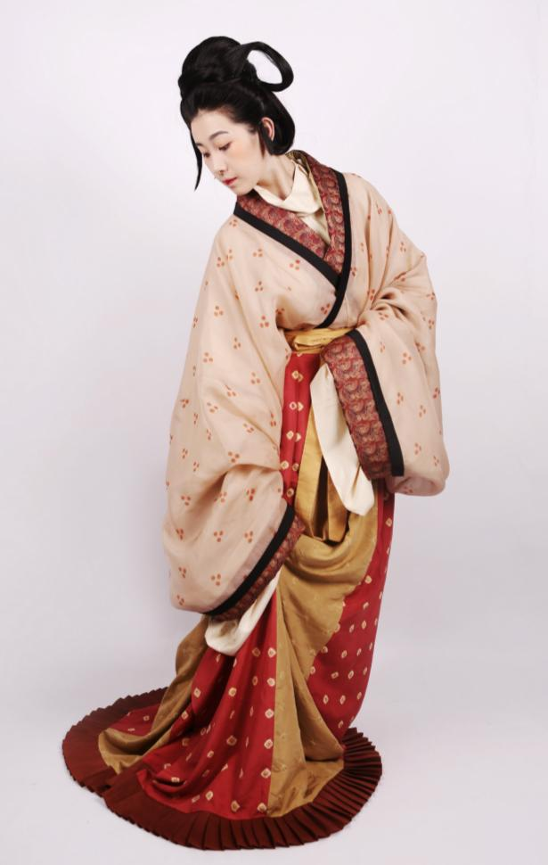
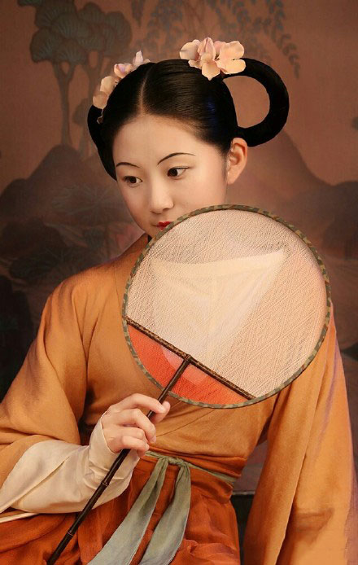
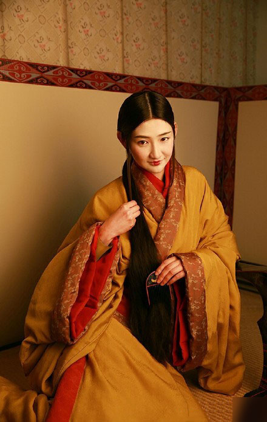
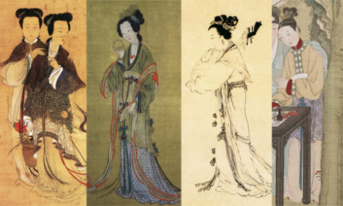
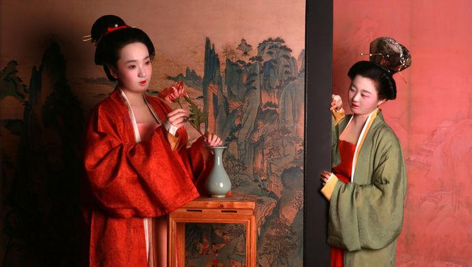
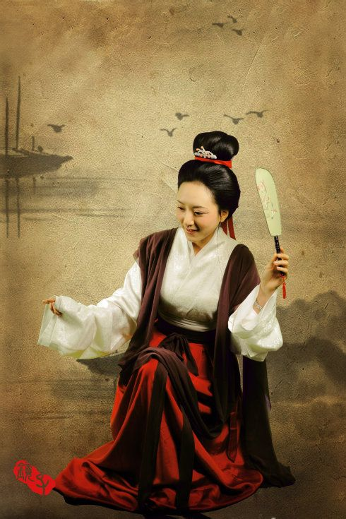
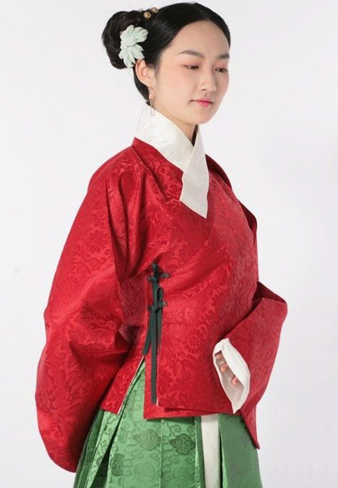
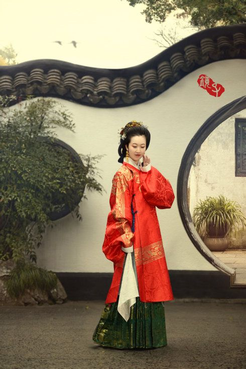
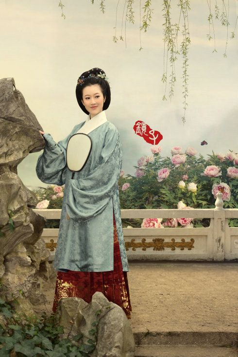
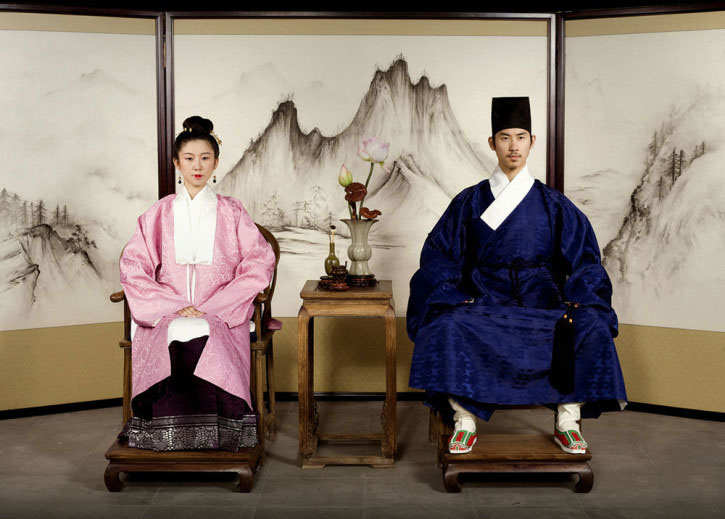
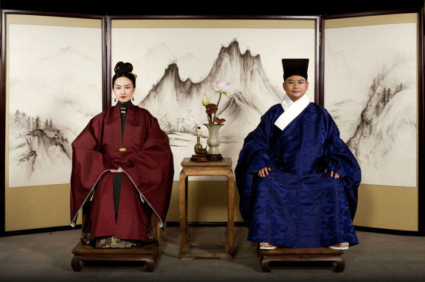
看完了以上华夏先人在服饰上对于红色的运用，那么问题也就来了，当代的“中国红”与华夏历史上的“红”是一个颜色和概念吗？
首先我们来看看古代的红是怎么形成的。人类最早使用的红颜料是风化后的赤铁矿，表现为深沉的红色，中国称为“赭”[zhě]，从西周的金文中就出现了这个字，但赤铁矿极易脱落，不能用做稳定的染料，好在古人早就发现了两种良好的植物染料，红花和茜草。 菊科红花属的红花汉代称胭脂，盛产于甘肃河西走廊的焉支山。这种花富含红花苷，是一种能与各种生物纤维紧密结合的直接染料，同时也可作药，即红花油。
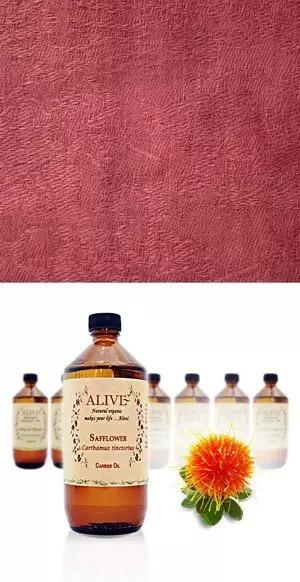
在汉代，这种植物就已是重要的红色染料，从织物到化妆品都有应用，匈奴人甚至用它的名字称呼妻子为“阏氏”，这就有了霍去病伐匈奴，使匈奴人悲悼“失我焉支山，使我妇女无颜色”的典故。汉光武帝改汉德为火德，官服用红色，胭脂花必定大有用处，于是这个词本身也成了红色的代称，但胭脂染色并不固定，从很深的橙色到鲜艳的红色都有。
另一类植物染料是茜草科茜草属的几个物种，它们的根部富含茜素红及红紫素，需要媒染剂才能染得牢靠，但胜在分布广泛，“茜”字在汉语里同样也有红的意思。
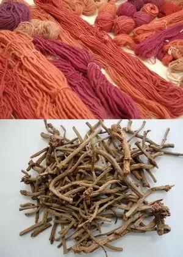
红花和茜草直至近代都是服饰中最重要的红色来源，但由于工艺不佳常常带有橙黄色，欲求更红，就需要后来的苏木了。
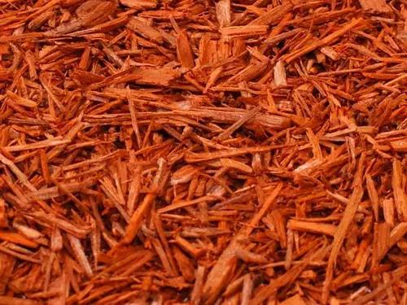
苏木是豆科苏木属的植物，原产中国南方和东南亚，其芯材富含巴西苏木素，通过不同的媒染剂，可以染出从肉色、红色到紫色甚至绿色来，在15世纪前后几乎是世界唯一的深红染料，是大航海时代重要贸易开发对象，“巴西”就是因为人们在那里发现了大量的同属植物巴西苏木而得名。
绘画和建筑涂料同样要用到红色。中国古代绘画最重要的红颜料非朱砂莫属。朱砂即硫化汞，是汞在自然界最常见的化合物，从鲜红到暗红都有，由于产量丰富，中国早在6000年前的河姆渡就有应用，后来的中国画中深浅不同的红色，几乎都是用纯度不同的朱砂调配而成，它还被用做印泥、漆器、化妆品。
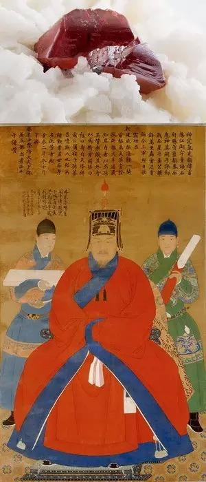
朱砂在中国高雅艺术中被广泛应用，但纯正的朱砂在西方非常昂贵使用不多，所以仅从文化考虑，朱砂的朱红色应该是“中国红”最好的代言，但是，朱红非常接近橙色（下图），与“革命红”相去甚远。
我们再来看看现代的“中国红”是什么红，先看一段记载。
以下为节选：
四九，新朝既兴，太祖会四方儒士于京，令议车旗服色诸事，以彰正统。国子监大祭酒、翰林学士郭沫若具表奏称：“曩者满清附 水德，而渐于民国；竖袁篡清，故不称克，曰生。水生木，则民国应木德。至蒋獠夺宫，外削北洋藩镇， 内攘民党异志，终得以据窃神器，自成一朝。则锐金克木， 故彼倡青天白日旗，尚白也。迩后我天朝神膺天命，扫荡六合，驱貔貅之师以定鼎，逐蒋逆蕞孽于澎湖，武威所至，莫不影从。四海晏靖，九州归心，此匡古未有之 盛也。 前朝金德，洪火克金，我朝当承火德，尚赤也。又，我朝以“无产”为纲，发自黎民，民者，后土也，土德尚黄，宜相阖。陛下脱误从此，国祚可延。”
太祖嘉许，遂定赤旗，斑以黄星五点，取九五之意，以为朝廷徽征。诰诏诸府道郡县俱各易帜，由是河山一片红矣。
——《中华人民共和国史·五行志》
以上为开玩笑，不过郭大祭酒的提议刚好能够把五德终始说与中共早期的宣传“有机的结合在一起”，考虑到前苏联对中国革命的影响，正好这一套也适用于中共自己的宣传，所以“革命红”就被定为新中国的基调色。
不难看出，当代中国红深刻打上了苏联烙印，与汉族历史上的红不是一个概念，一个是民族文化的红色，一个是革命的红色。
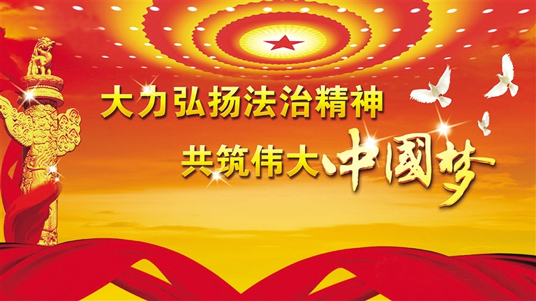
按照王朔的说法，当代中国人尤其是汉族现在是继承了满族的审美，带着浓重的东北大茬子味儿，汉族自己的审美却丢失了。
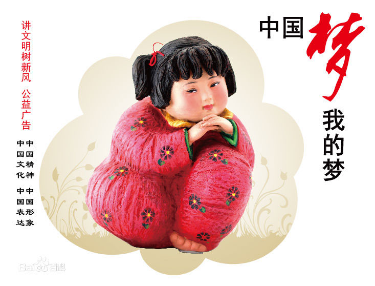
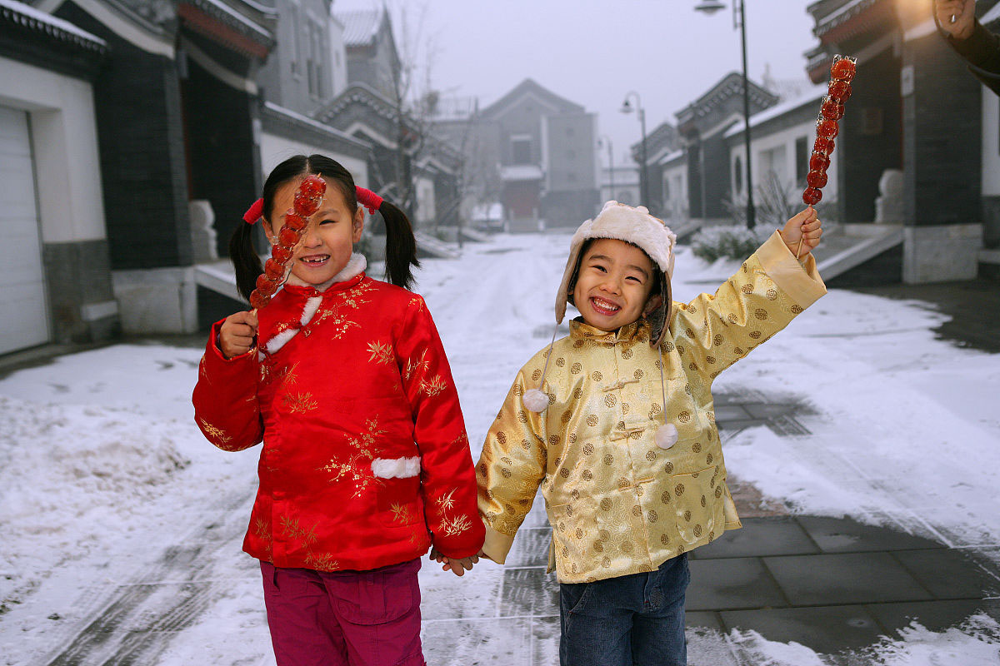
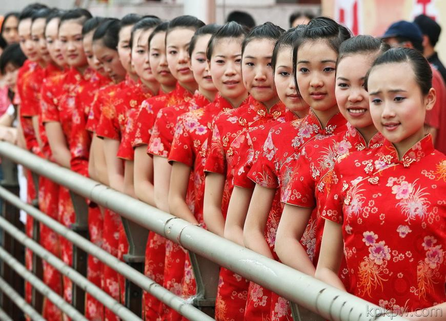
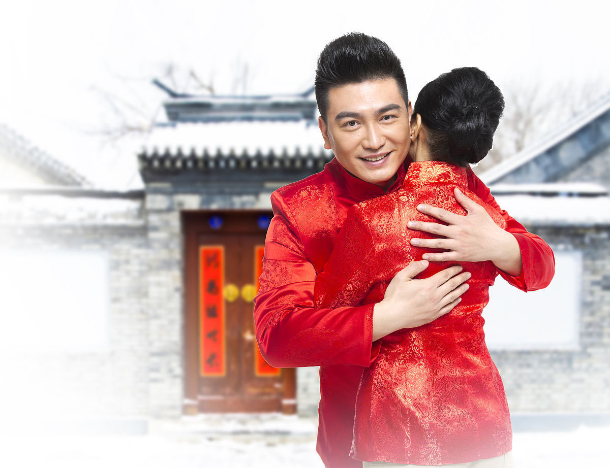
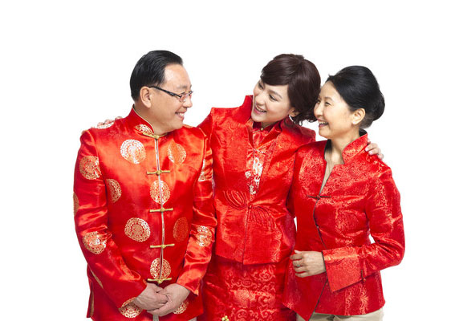
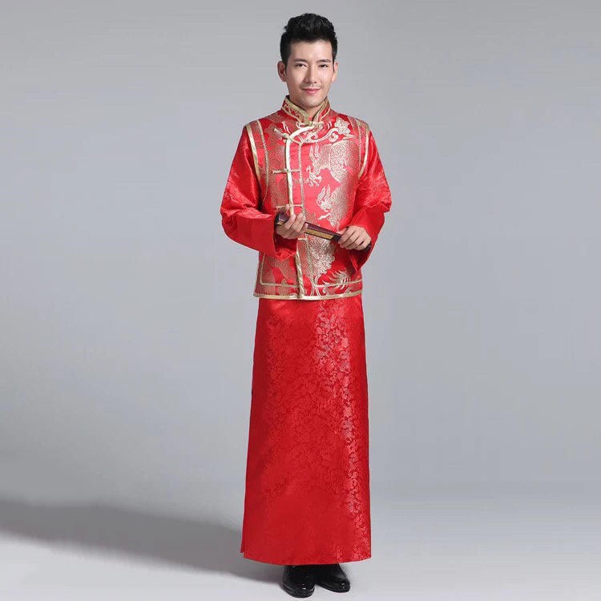
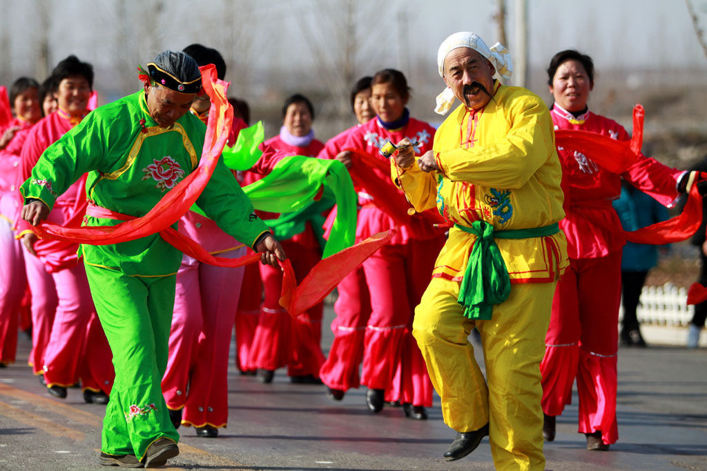
画风明显出现了变化，隐约觉得哪里怪怪的，是的，在当代的中国，满族对中国文化民俗的影响异常深远且深刻，绵延近五千年拥有厚重文化的汉族，在外在上彻底败给了满族，一声叹息！又比如下面这些图片：
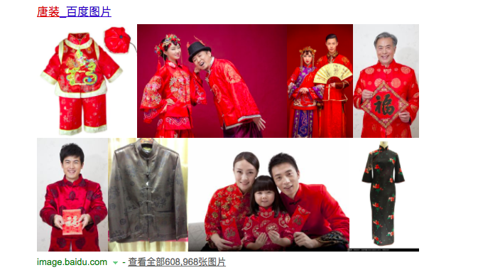
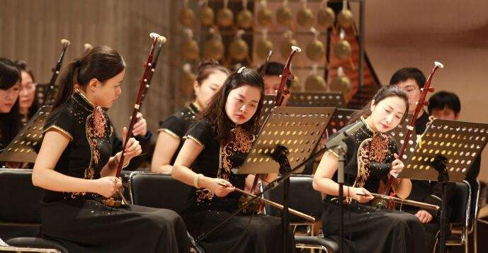
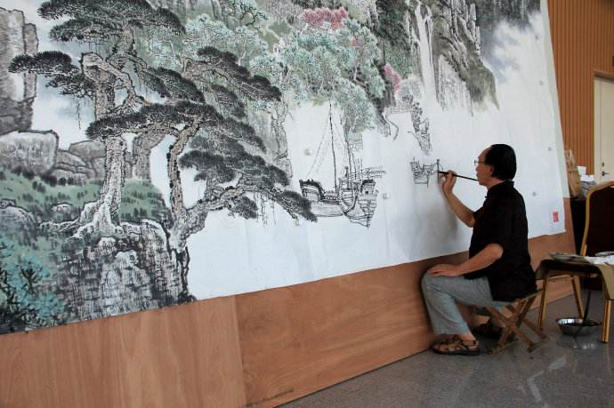
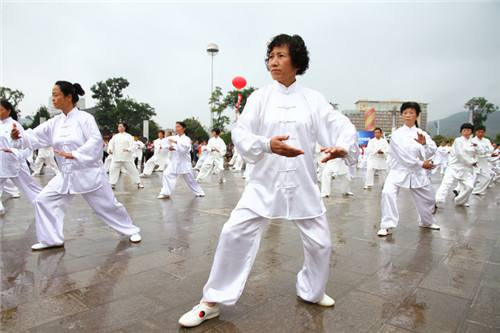
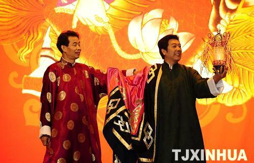
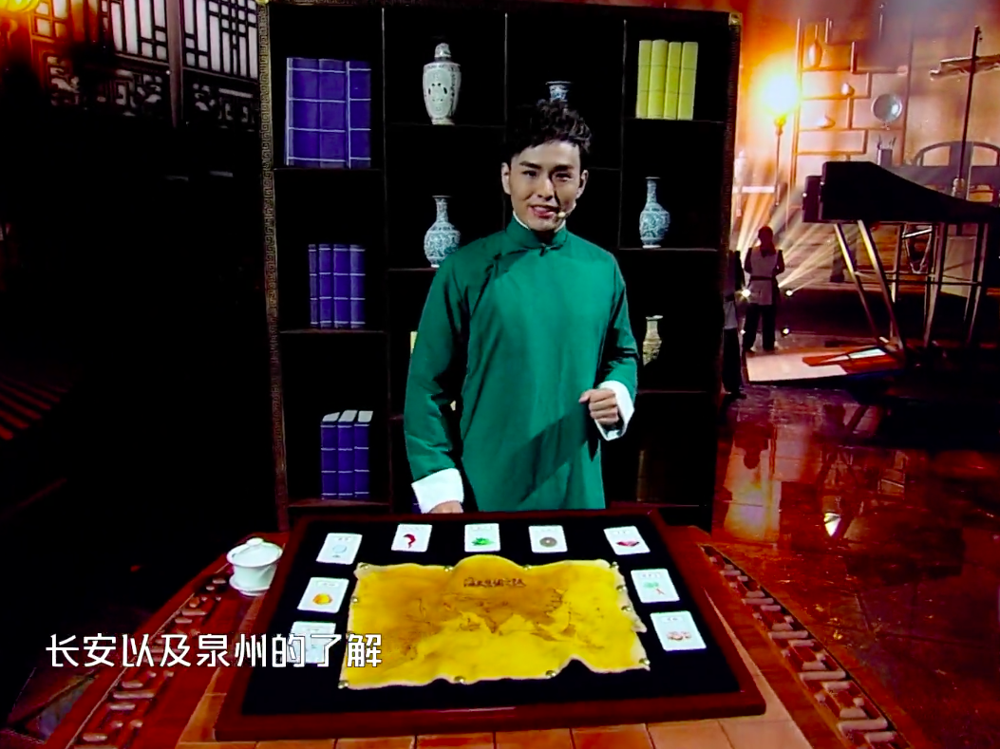
再次感概，对于拥有丰富美丽文化的我们来说，看到上面这些我的内心是拒绝的！
书归正传，尽管维基百科上“China red”词条正确定向到“朱红”上，但百度百科却巧妙地将之定向到了“大红色”——也就是从巴黎公社一脉相承下来的“烈士的鲜血”…………
可惜了啊
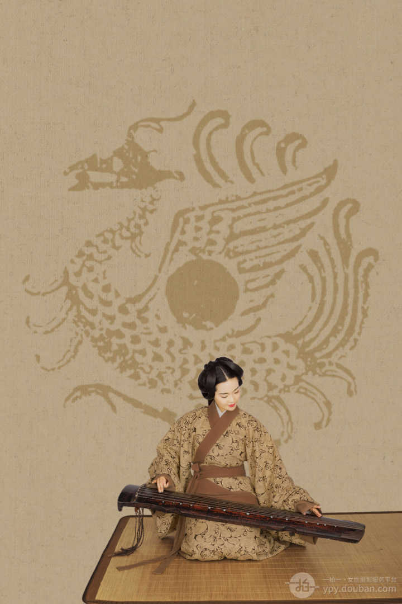
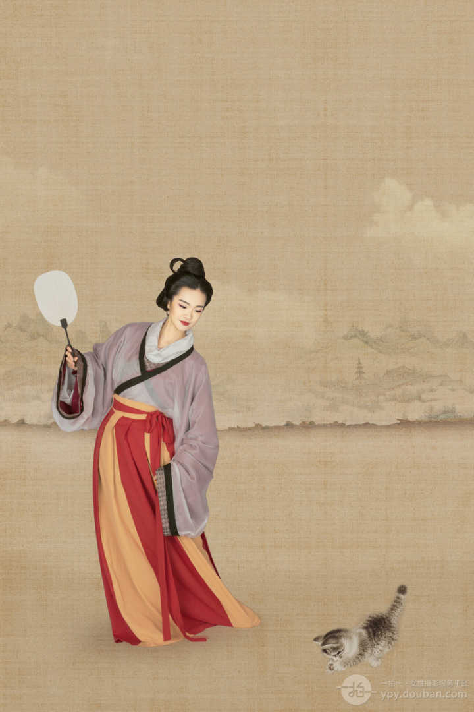
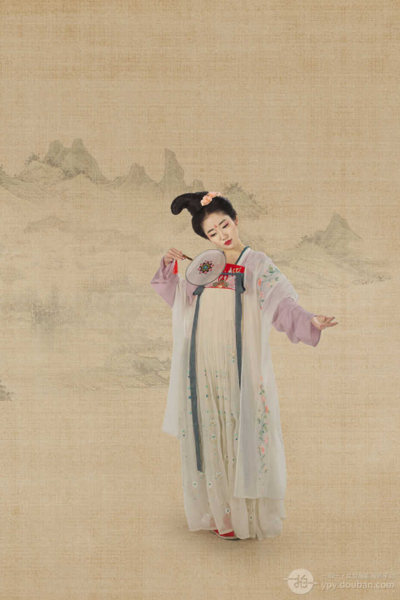
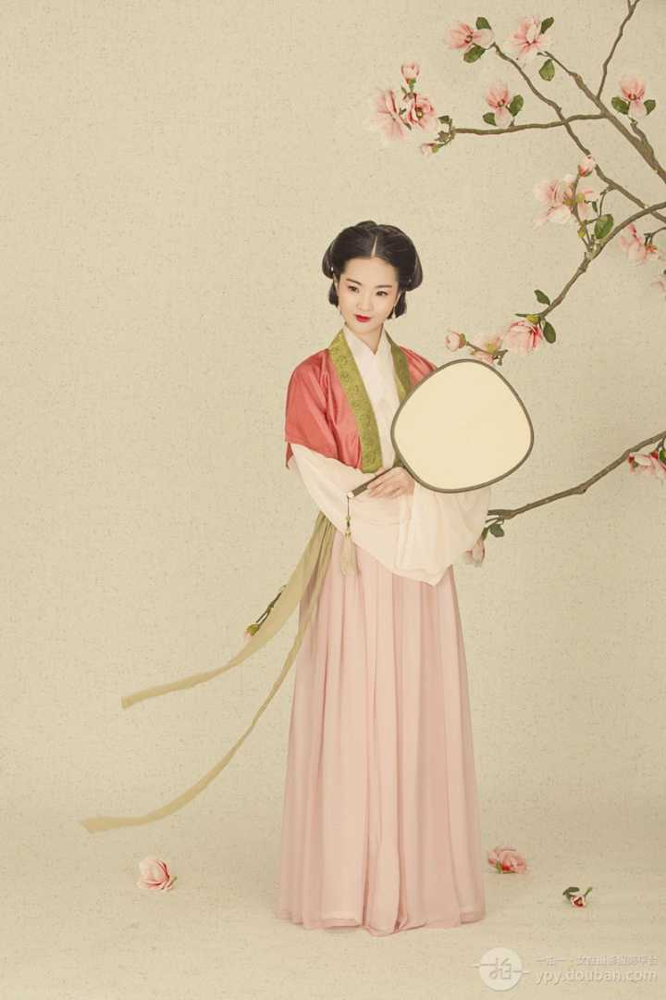
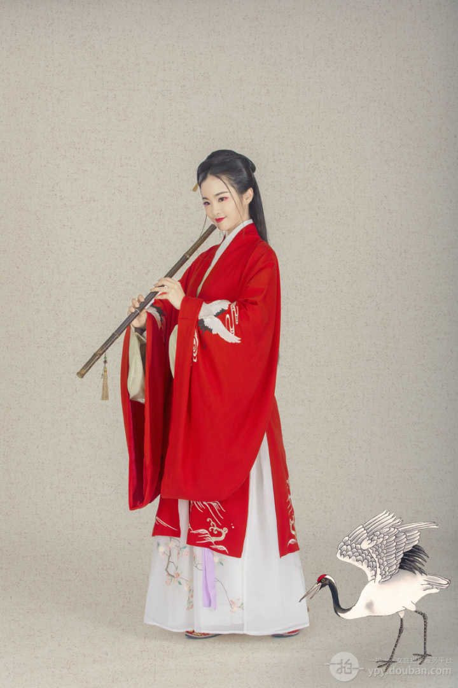